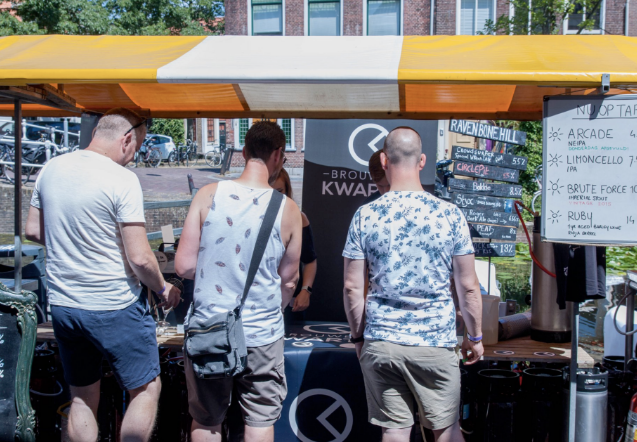
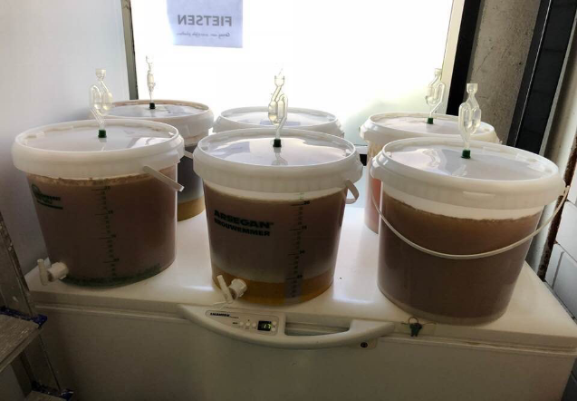
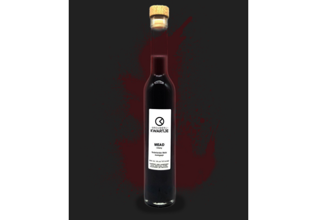

Evenementen
-
The Hague Craft Festival 2020
19 juli 2020 van 12:00 - 20:00
Na een geweldige 1e editie vorig jaar organiseren De Prael Den Haag en Brouwerij Kwartje ook in 2020 weer het The Hague Craft festival! Verwacht meer haagse brouwers, gave bierwinkels en nog meer verassingen!
Bekijk meer

gratis entree
incl. 3 bier
 -
Bier experimenten 2020
16 augustus 2020 van 12:00 - 20:00
Zamenhofstraat 90, 2518 LB, Den Haag
Kom onze nieuwe brouwsels als aller eerste proberen. Het bier voor deze proeverij is op kleine schaal gebrouwen. Als het biertje bij de proevers aanslaat zullen we het op grotere schaal gaan brouwen.
Kaartje kopen
€15,-
incl. 3 bier
 -
The Hague Craft Festival 2020
19 juli 2020 van 12:00 - 20:00
locatie
Na een geweldige 1e editie vorig jaar organiseren De Prael Den Haag en Brouwerij Kwartje ook in 2020 weer het The Hague Craft festival! Verwacht meer haagse brouwers, gave bierwinkels en nog meer verassingen!
Kaartje kopen
€10,-
incl. 2 wijntjes
